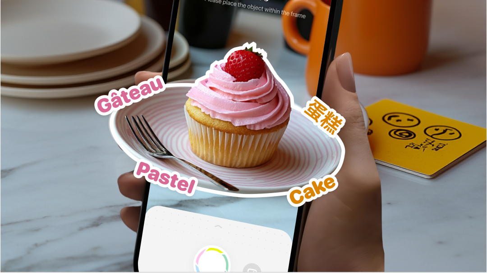
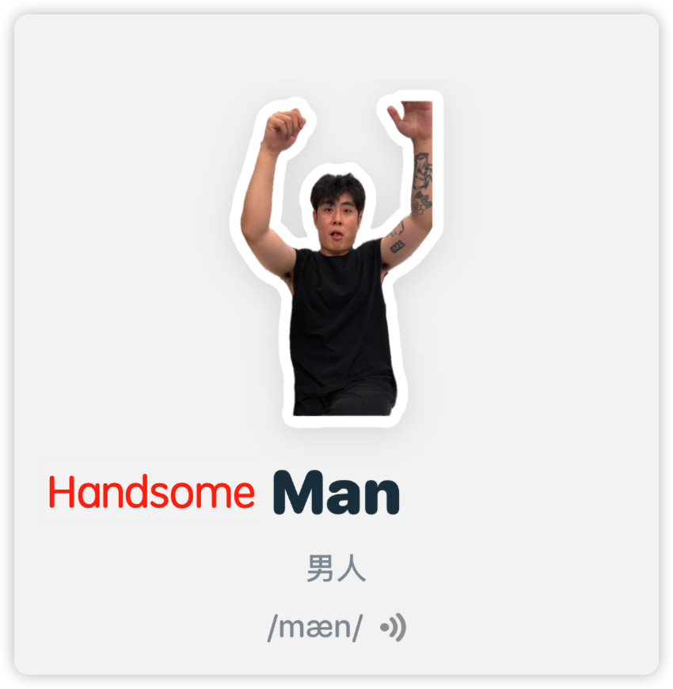
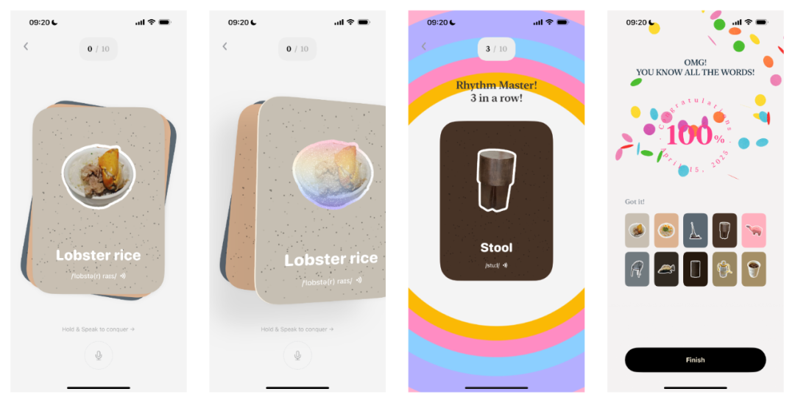
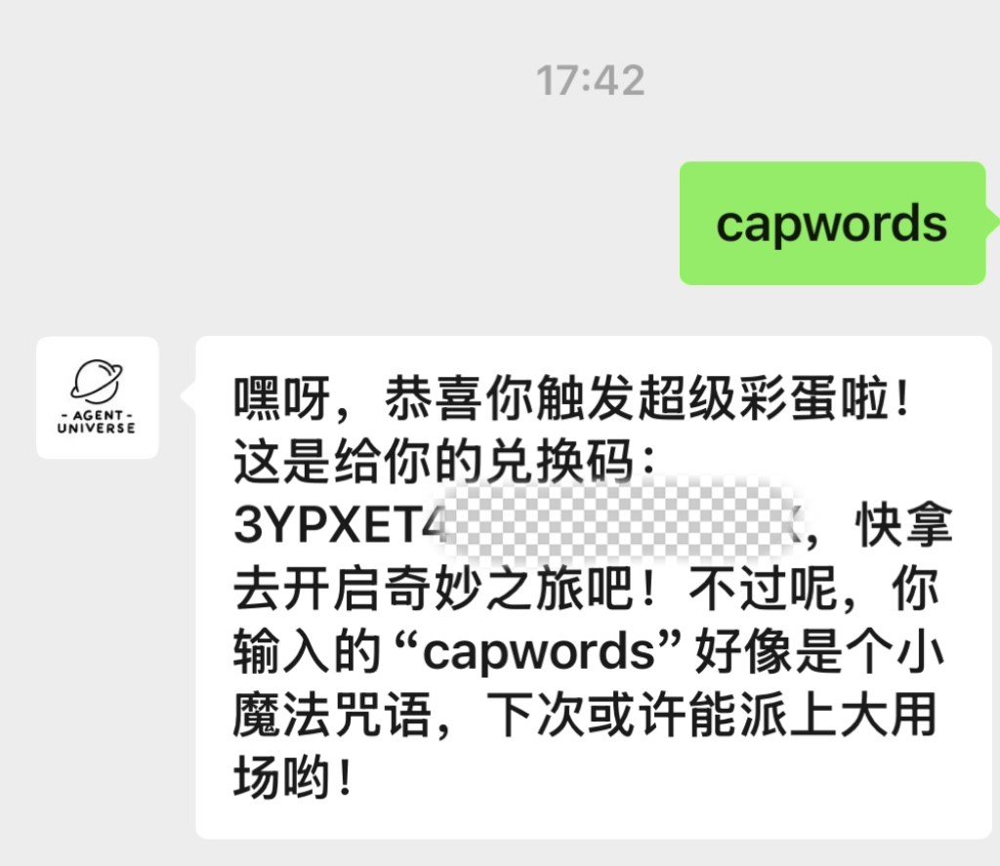

用 AI 让学英语上瘾，CapWords 让你像抓宝可梦一样记单词！CapWords: Learn Vocabulary Like Catching Pokémon!

从一句"爸爸，这个怎么说？"开始，一款爆火的外语学习 App 诞生了。
不知道大家有没有在学外语，最近路卡因为一个 APP，对外语的学习热情异常高涨。
说到学习外语，大家的第一反应就是多邻国（Duolingo），得益其精细的游戏化设计，多邻国成为了当前世界上最受欢迎的外语学习 APP。曾经路卡也用多邻国学外语，可惜我是个 P 人、是个电子 ED（塞尔达王泪 3 年未打盖侬患者的那种），所以即便是多邻国也没法激起我学习的兴趣。
但是我遇到了 CapWords，最近爆火的一款拍照学外语单词 APP。不打卡、不背词书、也不用死磕语法，却让我一个"多邻国都坚持不了三天的 P 人"——重新燃起了学外语的兴趣。每看到一个东西就想 'Cap' 一下，简直是 P 人学习外语的神器。
像抓宝可梦一样学单词
其实对于像我一样的 P 人来说，学习主要靠的是一时兴起，靠的是兴趣。背过那么多单词，如果不是因为兴趣，日常中的英语用法是根本不知道啊。
而 CapWords 就是这么一个为兴趣而生的外语单词学习 APP，一时兴起 'Cap' 一下，以好奇心为驱动，随时随地学单词。相信它不仅适合 P 人，也适合所有人，因为兴趣是最好的老师。
CapWords 的功能很简单，打开相机，拍摄物品，CapWords 利用 AI 能力便能帮你抠出镜头中的物品、做成单词贴纸收藏起来。功能虽简单，但是却好玩到上瘾，凡是身边接受了我的安利的朋友们都玩疯了。

日常中，看见一个东西，想知道其外语怎么讲？那么拿出 CapWords 'Cap' 一下～
疯玩了好几天下来的感受就是，CapWords 像是有什么神奇的魔力一样，看见什么都不自觉地拿起手机想 'Cap' 一下。可以这么描述，**你用相机拍下来的那一刻就感觉像在玩宝可梦，世界上所有事物都变成了神奇宝贝，'Cap' 一下就收服了下来。**这又何尝不是一种游戏化设计！
回到童年，制作自己的专属单词卡
这时候有人要说了，这跟我拿翻译软件输入中文进行翻译有什么区别？
还是有的！被我们 'Cap' 下来的单词都是我们身边一个个切实的场景，人是视觉动物，图像往往要比平白枯燥的文字更容易被记忆。
当你日后回顾这些 'Cap' 下来的小贴纸时，便会触景生情地联想到当时相机前的场景，那么一个个单词便被赋予了其独属于你的意义，活了过来，一个单词链接一段记忆。
场景 + 图像 + 信息 = 最好的记忆，这是 CapWords 在做的事情。

关于回顾，不得不说，CapWords 的设计感是很足的，'Cap' 下来的一张张小贴纸，在复习的时候变成了一张张设计精美的单词卡。连续读对了单词时还会触发动效彩蛋，这不禁让我想起了小时候对着实体单词卡学单词的场景。而 CapWords 让我们拥有了自己制作的专属单词卡。
爱与 AI
其实不止是复习闪卡这个功能，路卡有幸向开发者 DTD 了解到了设计 CapWords 的整个心路历程，可以说起初 CapWords 就是 DTD 专门为其女儿设计的一款产品，这是一款注入了一个家庭满满爱意的 APP。

故事可以追溯到 2022 年，我单独带女儿出去玩时，她指着一个路牌问："爸爸，路牌用英语怎么说？"英语并不好的我只能打开 Google 翻译，蹦出的生硬机械音 'Signpost' 让我意识到这样的互动不应该发生，希望能有一种方式记录这些真实的场景，并标注相应的外语单词，这样女儿也能随时回顾学习。于是 CapWords 最初的构想诞生了：从熟悉的事物，学习新的语言。
——DTD，CapWords 开发者
纵观整个 CapWords 的功能设计，其很好地使用了 AI 技术，从 Apple VisionKit 的图像分割、视觉模型做物体识别，到复习闪卡的语音识别，做到了场景需求与 AI 的完美贴合。
虽然产品功能很简单，只满足了拍照学单词这么一个需求场景，虽然运用到的 AI 技术也很简单，并没有使用什么 SOTA 大模型、高级 Agent... 但这反而给了我们一点启示：**一个 AI 产品的好坏并不在于追求用多么强大的模型或者高级的 Agent 设计，而在于产品需求本身。**从一个小的场景痛点出发，匹配恰好的 AI 做解法，也能做出爆款 AI 产品。
最后，私认为 CapWords 能够被喜爱，不仅是其对 AI 的巧妙应用及优美的设计，更多地还是因为其诞生于由'爱'衍生出的需求中。